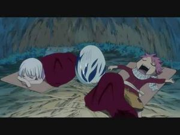

Guitar Hero
 De: La Frikipedia, la enciclopedia extremadamente seria.
De: La Frikipedia, la enciclopedia extremadamente seria.
De la serie Videojuegos:
Guitar Hero

quien dijo que un mono no puede tocar(haciendo alusión a Roberto Trujillo)
| Desarrollado por:
|
Activision
|
| Distribuido por:
|
un vago que regala folletos
|
| Diseñado por:
|
Un hombre alto de anteojos
|
| Motor
|
El de un volksvagen
|
| Género(s)
|
Femenino singular
|
| Fecha de lanzamiento:
|
47 de febrero de 1735
|
| Modos de juego:
|
Hasta 1350 jugadores
|
| Requisitos:
|
Un televisor y un jugador, en algunos casos es necesaria una PS2 o PS3
|
| Disponible en:
|
cualquier fruta
|
| Formatos:
|
Cuadrados y triángulos
|
| Edades:
|
Desde que naces hasta que te moris
|
| Puntuaciones:
|
do re mi fa sol
|
un juego muy mono
Guitar Hero (también conocido como Gaidar Jiro) es un videojuego desarrollado por la compañia Activision, y distribuido por Red Octane (compañía de armas irakí antes conocido como marca acme) junto con Harmonix (primero) Coca-cola company y Neversoft (Actualmente).
Vamos que esta franquicia ha pasado por mas manos que un billete de 5 euros pegado con celo.
El objetivo de este juego es convertirte en un Guitar Hero (Heroe de la Guitarra), y para ello tienes una guitarra de Plastiquete con una barra de Vibrato, su mastil y sus 5 botones de Traste, para que te sientas como Jimi Hendrix y con sus canciones "algo viejas" recordarle a tu abuela que algún día tuvo 45.
Los modos de dificultad:
Biginer:
Sí existe, pero es tan fácil que todas las notas son iguales y si fallas las notas, aún así ganas.Usualmente si pierdes aqui (cosa imposible) estas maldecido por tu puta madre, en tal caso deja la guitarra lentamente y ponte a rezar
Fácil:
Nivel calificado del 1-3 por la innombrable. Este nivel es un esbozo. Es mas dificil respirar. Este nivel es para la gente n00b o con dedos duros o las 2 cosas, la gente que se hace Through the Fire and the Flames en este nivel y se cree se pueden llamar creidos y hijos de la CSM.
Medio:
Este nivel es calificado del 4-5 por mí. Es para la gente normal. Este nivel es perfecto para los presidentes como Obama y Fidel Castro. Tienes que mover los dedos como si estuvieses en la escuela tecleando o escribiendo si es que no estuvieses en el fumadero de tu escuela vestido/a de puta/o para venderte.
Dificil:
Calificado del 6-7 por alguien. Este nivel es para la gente que en una cirugía o algo por el estilo le hayan inyectado en el cerebro marihuana. Te vicias con el juego y hasta te puedes vender por jugarlo. Las notas ya son una exageracion, así que ten cuidado de no convertirte en un guitar Freak.
Experto:
Nivel del 8-10. Ahora darias tu vida por tu CD de guitar hero u otra cosa de esta compañía. Nadie normal podría hacer esta dificultad. No tienes vida y probablemente tampoco familia ya que te abandandonaron. Vale decir que si juegas este nivel, las notas salen de todos lados y que solo es posible hacer esta dificultad si tienes 6 dedos o más en las manos. Si hay 2 televisores en la habitacion, en el otro apagado tambien salen notas, esto es un avance en tecnologia y blutúc.
Experto +:
Nive del Infinito, nivel exclusivo del Guitar Hero Metallica y el "Smash Hits" y sólo para la batería, el chiste de este sádico nivel es usar los dos pedales de la batería para torturarte divertirte más. Este nivel solo es alcanzado por un auténtico friki sin vida social y que vive con su mamá. Este nivel fue creado por Chuck Norris para hacer algo mientras calentaba sus palomitas.
¿Qué se consigue?
 Tipica cancion en guitar hero chuck norris en nivel Facil
Basicamente, machacarte los dedos, y hacer creer al jugador que esta tocando de verdad. (Se han dado casos de ataques epilépticos gracias a las lucecitas que parpadean y que hacen que no veas una puta mierda los hospitales del mundo entero reciban más pacientes).
Los más audaces pueden conseguir impresionar al palurdo sentado en el sofá tocando una canción en nivel fácil y presumiendo de que relamente él está tocando la canción verdaderamente.
Algunos jugadores anónimos, como Emilio Butrageño, Santa Claus y el propio pikachu han conseguido destrozar el televisor tras perder contra el enemigo final en la guerra de guitarras tres veces seguidas.
Una vez que lo acabes crees que puedes ir a tocar la guitarra a cualquier plaza de tu ciudad y te corren por no registrarte en la ALC (Asociación de Limosneros Callejeros).
Algunos grupos presentes
Guitar Hero y la vida misma

Aquí se muestra Guitar hero en los años 100 a.C.
Este juego ha supuesto un pazo más en la revolución de los simuladores musicales, tomando la idea del "Guitar Freaks" de Konami.
Mientras este ultimo solo se dedica a incluir temas de indole Japonesa, Guitar Hero incluye canciones de sobra conocidas por todo el mundo, con artistas como Metallica, Muse, Dragonforce, Heroes del Silencio, Etc... Y ha sido y es un juego de culto entre la comunidad de los Heavys, pese a que la mayoría de temas fueron añadidos después de que el equipo hiciera una revisión y viera que solo se incluyó un tema y este era el tema principal de la serie pokémon.
Varios científicos afirman que Guitar Hero reduce el cociente intelectual del jugador con mensajes subliminales en las pantallas y personajes. En la segunda pantalla podemos apreciar perfectamente a Darth Vader en el fondo diciendo "NO VAYAS A LA ESCUELA".
Anecdotas y advertencias
Guitar hero en los comienzos
- NADIE pasó Through the Fire and the Flames a la primera, con hypervelocidad 5, en Experto y con un 100% de aciertos con los ojos vendados, con el modo presicion activado y tambien el modo actuacion, colgado del techo, con las manos atadas a la espalda y tocando la guitarra del juego en llamas con los dientes.
- La guitarra puede emitir ciertas radiaciones sospechosas que vuelvan al jugador deforme.
- Al menda que colgo un video en youtube pasandose dicha cancion ahora es componente del grupo "Pablito y su guitarrita"
- A cada canción que juegas, te darás menos cuenta de que estás apretando cinco botoncitos de colorines en una guitarra de plástico en tu casa mientras hay verdaderos héroes como Homer Simpson jugándose el culo para salvar la tierra a cada instante.
- La guitarra NO ES UN RASCADOR DE ESPALDA NI DE CULO (avisale a tu mamá).
- La guitarra puede ser usada como lanzallamas en un caso crítico de invasión de suegras. También como hacha, aunque es menos recomendable, ya que la mierda se quema mejor que se corta. (Oops...)
- No intentes utilizar la guitarra en el parque para impresionar a tu novia... recuerda que NO ES DE VERDAD !!
- Se recomienda gastar compulsivamente los 70 euros de la guitarra que acompaña a cada edición del juego para ser un auténtico Guitar Hero, y contribuir con las empresas ilegales de empaquetación de carne de wombat con tu compra.
- La guitarra auto explosionará al cabo de 10 días de comprarla, probablemente cuando estés a punto de hacer tu primer 100% en cualquier canción.
- Solamente si tienes la guitarra es guitar hero de otra forma seria
una mamada control hero.
- Nunca podras hacer el 100% de una cancion en experto, por que pasara cualquier cosa desde que no responda el mando hasta que se valla la luz.
- Este videojuego escausa de cáncer de pulmón, hígado de mama y en algunos casos hasta pudo provocar la sífilis.
- Intentar tocar una guitarra REAL después de jugar Guitar Hero puede causar traumas psicológicos y físicos, y dependiendo de lo que hagas con ella sordera.
Eres un witar jirro (guitar hero) si...
- no sales de tu casa por que llegaste al solo de tru daa faier en fleims al 100%
- eres un posers que escuchabe reggayston y ahora te crees mas heavy por jugar esta m%%&/%·/&&$&$%
- crees que dragonforce (studioforce/nintendoforce)es lo mejor del power metal, sin conocer a verdaderas bandas como helloween.
- estas mas blanco que la fregada por que no sales de tu casa.
- eres friki/otaku y a su defecto posers gays
- piensas que la cancion mas vergas es revolution deathquad.
- te aprendes la historia de cada uno de los grupos por que segun tu son los mejores.
- piensas que eres el muy vergas pasando al 100% en experto cualquier cancion y tus amigos no
- Nunca has tenido novia(o).
- te grabas pasando el juego y lo subes a youtube(llutub).
- eres el primero en la fila para comprar el guitar hero III legends of rock(witar jirro III
lellens ef ruq).
- No sabes tocar guitarra pero sientes que si cuando lo juegas y te masturbas
- te pintas la yema de los dedos de los colores del juego y comienzas a
masturbarte hacer coreografías de alguna canción en una mesa
- vas a la casa de un amigo que tiene el guitar hero a
jugar todo el dia hacer un trabajo para el colegio y cuando "terminan" van a jugar y le vuelas tres patadas en su propia casa al frente de su familia. posteriormente cae en depresión ante la derrota.
Algunas Reglas o Mandamientos de empezar a ser Rock
- Me gozaré Rock al Parque. Es mi música. Es mi cultura. Es mi derecho y de quienes están conmigo.
- Cantaré, brincaré y me contagiaré de la alegría colectiva. Es mi derecho y de quienes están conmigo.
- Haré de Rock al Parque un espacio de extrema convivencia. Es mi responsabilidad y la de los demás.
- Celebraré la diversidad de géneros musicales y respetaré a artistas y sus seguidores.
- Me vestiré como me gusta, teniendo en cuenta las condiciones climáticas.
- No iré si estoy en estado de embarazo, embriaguez, o si soy menor de 12 años.
- Portaré mi documento de identidad y el carné de salud, por si las moscas.
- Seré paciente en la requisa y no llevaré chapas, reatas u otros objetos contundentes, morrales, alimentos, licor, sustancias alucinógenas, armas blancas o de fuego, envases de ningún tipo o ropa alusiva a cualquier equipo de fútbol. Es mi compromiso y el de los demás.
- Acataré las normas de seguridad y señalización y colaboraré con la organización del Festival. Informaré cualquier irregularidad a las autoridades.
- No la montaré de malo arrojando objetos a los escenarios ni tratando de subirme a ellos sin estar autorizado.
- Me alimentaré e hidrataré apropiadamente porque respeto mi cuerpo y el de los demás.
- Fijaré una hora y punto de encuentro con mi parche, en caso de que nos separemos.
- No obstruiré las entradas, salidas y zonas de circulación. Al terminar el evento no correré para evitar caídas y accidentes innecesarios y tendré cuidado con los carros al salir.
Recordaré este Rock al Parque hasta que llegue el próximo.
Los diez mandamientos del Guitar Hero
- -Amaras al rock por sobre todas las cosas (y lo dignificaras de tanto músico hipócrita, oportunista, arribista, envidioso, etc. etc.)
- -No tomaras el nombre del rock en vano (y menos si lo que tocas es ritmo duranguense y cumbia entre semana y el domingo te quieras convertir en estrella de rock)
- -Santificaras las fiestas (no llegaras con falsas poses de estrellas pop: briagos, mugrosos, idiotizados, faltos de toda ética profesional y dignidad humana)
- -Honra a tu Padre y a tu Madre (si es que tienes)
- -No mataras (la ilusión de tus fan tocando puras jaladas e imitando a grupos extranjeros, pensando que la banda es tan ignorante, que no se da cuenta a quienes estas imitando)
- -No fornicaras (con la esposa de tus compañeros y mucho menos con el cantante de tu grupo)
- -No robaras (las canciones de los demás te prepararas para componer las tuyas y tendrá que ser letra y música que valga la pena y no una vergüenza para el rock)
- -No dirás falso testimonio (que eres el único grupo que jala gente, que eres el mejor y que por ello te deben de poner muy grande en la propaganda, además de pagarte todo el dinero de las entradas a los eventos, ¡solo a ti!)
- -No tendrás malos pensamientos (no pensaras en sabotear la actuación de otros grupos ni hablaras mal de ellos ni los odiaras ni les pondrás mal ejemplo)
- -No codiciaras los bienes ajenos ( en especial los bienes de los organizadores de eventos de rock. ya que ellos se han esforzado en practicar, la mentira, la simulación, la difamación la calumnia, la burla el fraude y sobre todo el robo. por esto y por mucho mas ¡no debes envidiar estos bienes!)
Paginas Hermanas
|
|
 Shooter Shooter
 Terror Terror
 Velocidad Velocidad
 Rol Rol
 Estrategia Estrategia
 Aventuras Aventuras
 Fight! Fight!
 Clásicos Clásicos
 Deportivos Deportivos
 Aventura gráfica Aventura gráfica
 Novela visual Novela visual
 Personajes de videojuegos Personajes de videojuegos
|
Autor(es):
- Krusher
- Alex2610
- Khazike Khashondo
- El Sevillano
- Baraltz
- Naqudr
- PaladinImperial
- Webcrawler13
- Kenshin01
- Nolodoypornose
Frikipedia 2005-2016, Licencia
GFDL 1.2 - Extraído por FrikiLeaks